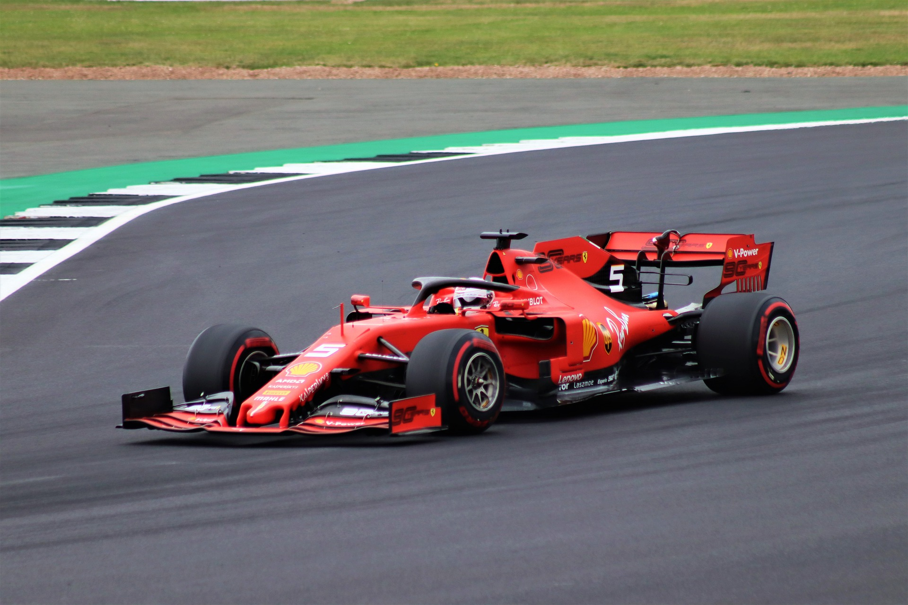
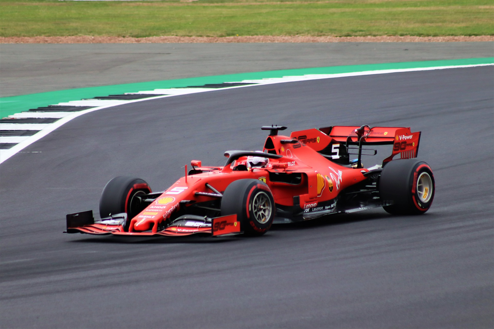

Sebastian Vettel
 

Who is he?
Sebastian Vettel is a German f1 driver. He debuted in the 2007 United States Grand Prix. He replaced Robert Kubica which had a massive crash the day before. He is now driving for Aston Martin F1 Team as the first driver. He's a living legend and has a solid fanbase around the world (Everyone is a Seb fan, even if they don't admit it). here's a couple teams he has raced for:
- BMW Sauber
- Toro Rosso
- Red Bull Racing
- Scuderia Ferrari
- Aston Martin Cognizant F1 Team
Where is he?
I don't know, why are you asking that? do you want to meet him? or do you want to rob his house? Anyways, all i know is he is from Germany.
Perhaps he resides in Monaco like may other F1 drivers. Honestly I don't know if that helps.
How is he doing?
He is a bit stressed when he is still driving for Ferrari, especially after the rain-soaked 2019 German GP, where his confidence skydived straight through the earth because he beached his car even though he is comfortably leading. When he first moved to Aston Martin, I don't know what happened, but his head rapidly balds. There are many F1 fans mocking him about the situation by making memes :( . But since he moved, he is a bit happier, especially his podium at Baku and Hungary (where he is disqualified because his car couldn't provide enough fuel sample).
The P tags below are from JS
NOTE THAT THIS SECTION IS STILL IN CONSTRUCTION. IF YOU CAN GIVE CODE PLEASE DO I DON'T LIKE JS
Here's some quotes from the Living Legend.
Disclaimer: I didn't interview Vettel personally and asked him about his quotes. I pulled these from brainyquote.com, so give credits where due.
Sometimes you need to hit pause to let everything sink in.
I don't care too much what happened in the past. I prefer to focus on what is coming next and I'm really looking forward to it.
There are some things that you can fulfill with money, but at the end of the day, these are not the things that make you happy. It is the small things that make life good.
I don't care what other people think as long as I am happy. The day I die or retire, I have blown all my chances because I don't have the chance any more to change my image as an F1 driver.
Menu text
Menu text
Menu text
Menu text